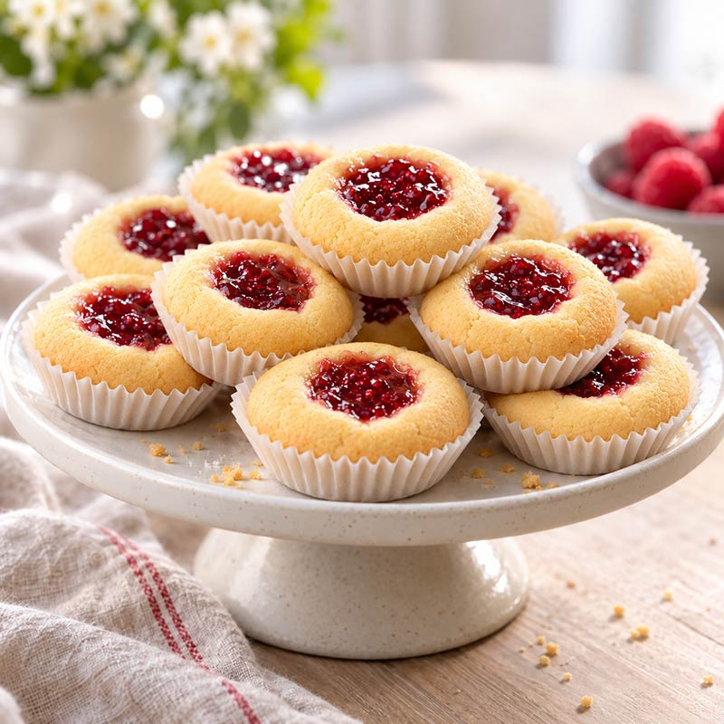

Hallongrottor
Hallongrottor är mördegskakor med en liten grop fylld med ljuvlig hallonsylt. De är både enkla att baka och uppskattade på kakfatet.
Ca 20-24 kakor

Ingredienser:
- 200 g smör eller margarin
- 1 dl strösocker
- 2 tsk vaniljsocker
- 4,5 dl vetemjöl
- 1 tsk bakpulver
- 1 dl fast hallonsylt
Gör så här:
- Sätt ugnen på 200 °C.
- Arbeta snabbt ihop smör, socker, vaniljsocker, vetemjöl och bakpulver till en deg. Gärna i matberedare.
- Rulla degen till små bollar och lägg dem i små kakformar ca 5 cm i diameter.
- Gör en grop i varje kaka med ett finger eller skaftet på en sked.
- Fyll groparna med hallonsylt.
- Grädda i cirka 12–15 minuter och låt sedan svalna på galler.